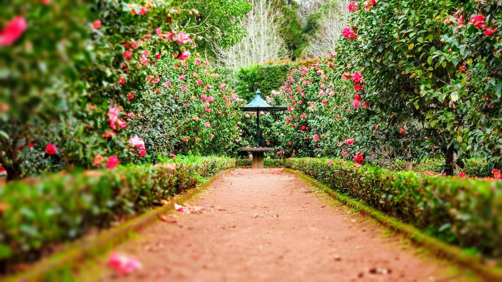
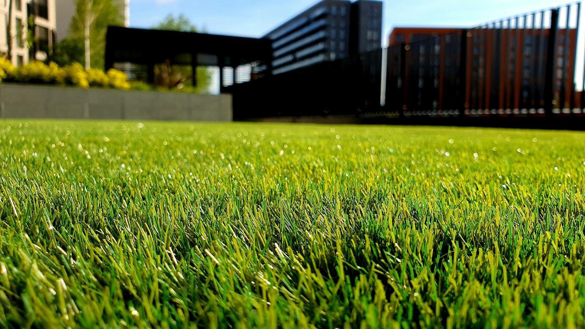

Spring
New beds, soil work, and the first irrigation check before the hills go gold.

Mill Valley, California
Gardens, stone, and native planting for houses on the hill and in the woods — designed to settle in, not to shout.

The practice
Wilder Grounds is imagined as a small Mill Valley studio for people who want the land around the house to feel inevitable: paths that find the view, planting that holds through a dry summer, and stone that looks as if it was always on the lot.
A Brightverse concept design — not a working landscape firm, and not a record of built gardens.
Through the year
New beds, soil work, and the first irrigation check before the hills go gold.
Water used carefully, natives in flower, and lawns only where they earn their keep.
Planting season proper. Trees go in, leaves are left where they feed the ground.
Structure shows: the stone, the trunks, the shape of the path in the wet months.
Marin and the city edge
On a live site this would be the start of a conversation about a garden. Here it is only the close of a concept.